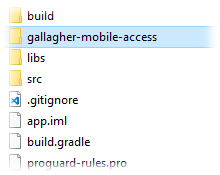
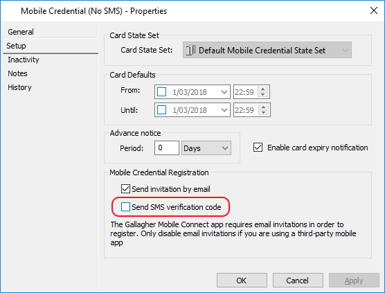

Unzip the zip file.
Place the gallagher-mobile-access directory under the app folder of your Android Studio project.
Example:

build.gradle under your app folderAdd a repositories section with the value
maven { url "file://$projectDir/gallagher-mobile-access" }
Also add Java version 8 source compatibility
Also add the gallaghermobileaccess library to your dependencies
Example:
apply plugin: 'com.android.application'
repositories {
maven { url "file://$projectDir/gallagher-mobile-access" }
}
android {
compileSdkVersion 29
compileOptions {
sourceCompatibility JavaVersion.VERSION_1_8
targetCompatibility JavaVersion.VERSION_1_8
}
// defaultConfig, buildTypes, etc
}
dependencies {
// android appcompat, your other libs
// Gallagher Mobile Connect SDK
implementation 'com.gallagher.security:gallaghermobileaccess:VERSION'
}
AndroidManifest.xmlAdd the following within your <application> tag:
<!-- Required for Bluetooth Background Access - Not required if you only want foreground -->
<service
android:name="com.gallagher.security.mobileaccess.BleBackgroundService"
android:exported="false"
android:stopWithTask="false" />
<!-- Required for NFC Access - Not required if you only want bluetooth (e.g. Manual Connect only) -->
<service
android:name="com.gallagher.security.mobileaccess.NfcBackgroundService"
android:enabled="true"
android:exported="true"
android:permission="android.permission.BIND_NFC_SERVICE">
<intent-filter>
<action android:name="android.nfc.cardemulation.action.HOST_APDU_SERVICE" />
</intent-filter>
<meta-data
android:name="android.nfc.cardemulation.host_apdu_service"
android:resource="@xml/ggl_apduservice" />
</service>
Add the following within your <manifest> tag, before the <application> tag:
<!-- Credential registration -->
<uses-permission android:name="android.permission.INTERNET" />
<!-- Bluetooth LE -->
<uses-feature android:name="android.hardware.bluetooth_le" android:required="true" />
<uses-permission android:name="android.permission.BLUETOOTH" />
<uses-permission android:name="android.permission.BLUETOOTH_ADMIN" />
<!-- Required for Android 6.0 and later when using Bluetooth LE -->
<uses-permission android:name="android.permission.ACCESS_COARSE_LOCATION" />
<!-- Required for Android 10 and later when using Bluetooth LE -->
<uses-permission android:name="android.permission.ACCESS_FINE_LOCATION" />
<!-- Required for Android 10 and later when using Bluetooth LE in the background -->
<uses-permission android:name="android.permission.ACCESS_BACKGROUND_LOCATION" />
<!-- permission for BLE scanning in the background if you wish to enable that feature - https://developer.android.com/about/versions/pie/android-9.0-changes-28 -->
<uses-permission android:name="android.permission.FOREGROUND_SERVICE" />
<!-- NFC -->
<uses-permission android:name="android.permission.NFC" />
<!-- Unlock notification wakes the screen -->
<uses-permission android:name="android.permission.WAKE_LOCK" />
The SDK must be configured before it can be used. To do this, call the MobileAccessProvider.configure method.
We recommend you do this in your Application onCreate method. If you are using background access (either bluetooth or NFC) and you do not configure the SDK at or before Application onCreate, then the SDK may crash on launch.
The configure method has the following arguments:
application:databaseFilePath:null). The filesystem location at which the SDK stores it's internal SQLite databaseunlockNotificationChannelId:null. See Configuring Android Notifications under the Troubleshooting / Customising the SDK section at the end of this document.bleForegroundServiceNotificationChannelId:
Required if you are going to use Bluetooth Background Access, otherwise you may pass null. See Configuring Android Notifications under the Troubleshooting / Customising the SDK section at the end of this document.notificationsChannelId:null. See Configuring Android Notifications under the Troubleshooting / Customising the SDK section at the end of this document.enabledFeatures:You may use the MobileAccessProvider.getInstance() method to obtain a reference to the SDK via the MobileAccess interface from any point in your application, however you MUST have called MobileAccessProvider.configure() first. Attempting to get getInstance() without configure will result in a Runtime exception being thrown.
Reference:
MobileAccessProvider
MobileAccess
In order to get the SDK up and running, you will most likely want to call the setScanning() method and pass true.
Here is an example of an application which starts scanning and auto-connect upon launch. If you do not have any such existing infrastructure, the simplest way to do this is to implement a custom Application class for your android app.
<application> tag in your AndroidManifest.xml, and add the following attribute:
android:name=".Application"Application, with the following content (note: package imports omitted)public class Application extends android.app.Application {
private MobileAccess mMobileAccess;
@Override
public void onCreate(Bundle savedInstanceState) {
super.onCreate(savedInstanceState);
mMobileAccess.setScanning(true);
mMobileAccess.setAutomaticAccessEnabled(true);
}
}
At this point you should be able to compile and launch your app successfully.
The SDK is now waiting until you register at least one mobile credential, after which point it can be used for access.
In order to gain access or communicate with readers over Bluetooth or NFC, you must first have a registered credential to authenticate your user and device.
Mobile credentials are created in Command Centre, either using the Command Centre Client, or via the Command Centre REST API.
For more information, see the REST API documentation.
You will need to obtain an invitation URL. If you are creating credentials using the REST API, you will also be able to use it to retrieve the invitation URL. Please refer to the server-side integration guide and REST API documentation for more information.
You can also build the invitation url using the resolveInvitationUri(invitationBaseUrl, invitationCode) method in the Mobile Connect SDK.
Given an invitation code, and the hostname of the Gallagher Cloud Server (https://commandcentre-ap-southeast-2.security.gallagher.cloud) you may call this method to generate the invitation URL.
When getting started, the easiest option will most likely be to use the Command Centre Client to send yourself an invitation via email, and use the invitation code from the "Manual Registration" section of the standard Gallagher invitation email message.
Note: By default, credentials sent for the Mobile Connect app will also require a second step of SMS verification.
SMS verification is not supported for third-party apps using the Mobile Connect SDK, so in order to email yourself a credential without the SMS step you must create a new Mobile Credential Card Type using the Command Centre Configuration client, and use this card type when sending your test credential email.

Once you have obtained the invitation URL, use the registerCredential(invitationUri, registrationListener) method to begin the registration process. The SDK will asynchronously call the callback methods on the registrationListener to inform you of success or failure. Callbacks will arrive on the main thread.
Example:
try {
URI invitationUri = ...
mMobileAccess.registerCredential(invitationUri, new RegistrationListener() {
@Override
public void onRegistrationCompleted(@Nullable MobileCredential credential, @Nullable RegistrationError error) {
if(error != null) {
Toast.makeText(context, error.getLocalizedMessage(), Toast.LENGTH_LONG).show();
} else if(credential != null) {
Toast.makeText(context, "Registered!", Toast.LENGTH_SHORT).show();
}
}
// If the credential allows for second-factor authentication, then we need
// to ask the user which method they'd prefer; Fingerprint or PIN?
@Override
public void onAuthenticationTypeSelectionRequested(SecondFactorAuthenticationTypeSelector selector) {
// pop a dialog here and ask the user their preference.
// In response to the dialog call selector.select
selector.select(true, SecondFactorAuthenticationType.FINGERPRINT);
}
});
} catch (URISyntaxException e) {
e.printStackTrace();
}
For a comprehensive example, please see the file RegistrationsFragment.java in the Android SDK sample application.
Note: When registering, the user will be prompted to choose a second-factor method - either PIN or Fingerprint. In order for this to succeed, their phone must have the system-level PIN/passcode lock enabled. See FAQ
Reference:
MobileAccess
RegistrationListener
MobileCredential
SecondFactorAuthenticationTypeSelector
SecondFactorAuthenticationType
Use the getMobileCredentials() method. This will return Collection<MobileCredential> - which you should copy into your own ArrayList or other stable collection.
Reference:
MobileAccess
MobileCredential
Use the deleteMobileCredential(mobileCredential, deleteOption, credentialDeleteListener) method. The SDK will asynchronously call the callback methods on the credentialDeleteListener to inform you of success or failure. Callbacks will arrive on the main thread.
You can obtain a reference to the credential object to delete by calling getMobileCredentials(). Mobile Credential objects have a getId() method which you should use if you wish to compare instances.
Example:
mMobileAccess.deleteMobileCredential(item, DeleteOption.DEFAULT, (credential, error) -> {
if(error != null) {
Toast.makeText(getActivity(), "Error " + error.getLocalizedMessage(), Toast.LENGTH_LONG).show();
} else {
Toast.makeText(getActivity(), "Deleted!", Toast.LENGTH_SHORT).show();
}
});
Reference:
MobileAccess
CredentialDeleteListener
MobileCredential
There are a variety of reasons why the SDK may not work even though you have called setScanning, such as Bluetooth or NFC being disabled in your device system settings, lack of permissions, etc.
You should use the addSdkStateListener(sdkStateListener) method. The SDK will asynchronously call the callback methods on the sdkStateListener to inform you of state changes. Callbacks will arrive on the main thread.
You may wish to log these state changes, or prompt the user to perform some action (such as granting permissions, or giving them a button to click to enable Bluetooth, etc)
Example:
mMobileAccess.addSdkStateListener(this);
// ...
public void onStateChanged(boolean isScanning, Collection<MobileAccessState> states) {
ArrayList<String> messages = new ArrayList<>();
for(MobileAccessState state : states) {
switch (state) {
case NO_CREDENTIALS:
messages.add("Please register a credential");
break;
case NFC_DISABLED:
messages.add("NFC is disabled; Please enable it to allow access using NFC");
break;
}
}
// display messages in a RecyclerView for example
}
Reference:
MobileAccess
SdkStateListener
MobileAccessState
You must call the enableAutomaticAccess() method in order to enable auto-connect. You can call disableAutomaticAccess() to disable it later if you require. Note that enabling and disabling automatic access does not affect bluetooth scanning, which continues until you call stopScanning()
By default, the Mobile Connect SDK will automatically attempt to connect to any nearby readers if the device enters the configured range.
If you wish to be informed about auto connect events, use the addAutomaticAccessListener(automaticAccessListener) method. The SDK will asynchronously call the callback methods on the automaticAccessListener to inform you of success or failure. Callbacks will arrive on the main thread.
Any calls to addAutomaticAccessListener should be balanced by a call to removeAutomaticAccessListener to prevent memory leaks.
Example:
@Override
public void onCreate(Bundle savedInstanceState) {
mMobileAccess.addAutomaticAccessListener(this);
}
@Override
public void onDestroy() {
mMobileAccess.removeAutomaticAccessListener(this);
super.onDestroy();
}
// ...
@Override
public void onAccessStarted(@NonNull Reader reader) {
updateDisplayState(reader, ACTIVE);
}
@Override
public void onAccessCompleted(@NonNull Reader reader, @Nullable AccessResult accessResult, @Nullable ReaderConnectionError error) {
if(error != null) {
updateDisplayState(reader, ERROR);
} else if(accessResult != null) {
updateDisplayState(
reader,
accessResult.isAccessGranted() ? GRANTED : DENIED);
}
}
Reference:
MobileAccess
AutomaticAccessListener
Reader
AccessResult
ReaderConnectionError
Use the setReaderUpdateListener(readerUpdateListener) method to provide a callback to be called when a reader is discovered via Bluetooth or NFC.
If you wish to show an interactive list of nearby readers in your application, you can use this to maintain a list of readers and other related information (such as visual state, appearance, etc) and display that information.
If your app only wants to use the auto-connect feature of the Mobile Connect SDK, then you can skip this section; The SDK will work regardless of whether you call setReaderUpdateListener
Example:
//...
mMobileAccess.setReaderUpdateListener(this);
//...
@Override
public void onReaderUpdated(ReaderAttributes reader, ReaderUpdateType readerUpdateType) {
if(readerUpdateType.equals(ReaderUpdateType.ATTRIBUTES_CHANGED)) {
// findReaderIndex should find the reader based on it's getId()
int idx = findReaderIndex(reader);
if(idx == -1) { // a new reader
addReaderToList(reader);
} else {
replaceReaderInList(idx, reader);
}
} else if(readerUpdateType.equals(ReaderUpdateType.READER_UNAVAILABLE)) {
int idx = findReaderIndex(reader);
if(idx >= 0) {
removeReaderFromList();
}
}
}
For a full example, refer to ReadersFragment.java, specifically the onReaderUpdated method of the ReaderRecylerViewAdapter.
Reference:
MobileAccess
ReaderUpdateListener
ReaderAttributes
ReaderUpdateType
Once you have discovered a reader, you can manually initiate an access request using the requestAccess(reader, accessListener) method. The SDK will asynchronously call the callback methods on the accessListener to inform you of success or failure. Callbacks will arrive on the main thread.
Example:
public void onReaderClicked(Reader reader) {
mMobileAccess.requestAccess(reader, this);
}
// ...
@Override
public void onAccessStarted(@NonNull Reader reader) {
updateDisplayState(reader, ACTIVE);
}
@Override
public void onAccessCompleted(@NonNull Reader reader, @Nullable AccessResult accessResult, @Nullable ReaderConnectionError error) {
if(error != null) {
updateDisplayState(reader, ERROR);
} else if(accessResult != null) {
updateDisplayState(
reader,
accessResult.isAccessGranted() ? GRANTED : DENIED);
}
}
For a full example, refer to ReadersFragment.java, specifically the above-named methods in the ReadersFragment class
Reference:
MobileAccess
Reader
AccessResult
ReaderConnectionError
Note: If you are not using the Salto integration on your site, you do not need to add the Salto library dependencies or make any other Salto related changes. You can ignore this section of the developer guide.
To use Salto keys with Mobile Connect you will need to add imports for the Salto JustIN Mobile SDK and Google Guava libraries in your app's gradle file
Example:
dependencies {
// android appcompat, your other libs
// Gallagher Mobile Connect SDK
implementation 'com.gallagher.security:gallaghermobileaccess:VERSION'
// Salto JustIN Mobile SDK
implementation(group: 'com.saltosystems', name: 'salto-justinmobile-sdk', version: '3.0.2', ext: 'aar')
implementation(group: 'com.google.guava', name: 'guava', version: '29.0-android')
}
AndroidManifest.xmlAdd the following within your <application> tag:
<!-- Required for SALTO JustIN SDK BLE communications -->
<service
android:name="com.saltosystems.justinmobile.sdk.ble.JustinBleService"
android:enabled="true" />
Add SdkFeature.SALTO to the list of enabled features passed into the MobileAccessProvider.configure method call.
Reference:
MobileAccessProvider
SdkFeature
This is a listener that handles Salto Key updates. Its single callback function onSaltoKeysUpdated will notify of changes to available Salto Key Identifiers.
Add the listener using the addSaltoUpdateListener method. After a listener is added, it will first be called back with the existing list of available Salto Key Identifiers to be added. After this the listener will be called back with any updates as they are received from the cloud.
Any calls to addSaltoUpdateListener should be balanced by a call to removeSaltoUpdateListener to prevent memory leaks.
Finally you must call the syncCredentialItemUpdates function which will kick off a sync request to the Gallagher Cloud.
Example:
@Override
public void onSaltoKeysUpdated(@NonNull List<SaltoKeyIdentifier> addedOrUpdatedSaltoKeyIdentifiers, @NonNull List<SaltoKeyIdentifier> removedSaltoKeyIdentifiers) {
// process the added or updated Salto Key Identifiers
for (SaltoKeyIdentifier saltoKey : addedOrUpdatedSaltoKeyIdentifiers) {
int updateIndex = -1;
for (int i = 0; i < mSaltoKeys.size(); i++) {
SaltoKeyIdentifier key = mSaltoKeys.get(i);
if (key.getCredentialId().equals(saltoKey.getCredentialId()) && key.getSaltoServerId().equals(saltoKey.getSaltoServerId())) {
updateIndex = i;
break;
}
}
if (updateIndex == -1) {
mSaltoKeys.add(saltoKey);
} else {
mSaltoKeys.set(updateIndex, saltoKey);
}
}
// process removed Salto Key Identifiers
for (SaltoKeyIdentifier removedSaltoKey : removedSaltoKeyIdentifiers) {
for (int i = 0; i < mSaltoKeys.size(); i++) {
SaltoKeyIdentifier key = mSaltoKeys.get(i);
if (key.getCredentialId().equals(removedSaltoKey.getCredentialId()) && key.getSaltoServerId().equals(removedSaltoKey.getSaltoServerId())) {
mSaltoKeys.remove(i);
break;
}
}
}
}
Reference:
MobileAccess
SaltoUpdateListener
SaltoKeyIdentifier
Salto Key Identifier updates are received from the Gallagher Cloud.
Connection problems and other issues may occur which prevent updates from being received. This listener can be implemented to be notified when such errors or state changes occur.
Listeners should be added using addSdkFeatureStateListener. The SDK will asynchronously call the callback methods on the sdkStateListener to inform you of errors or state changes. Callbacks will arrive on the main thread.
This listener is a shared channel for listening for errors from all features from SdkFeature. Errors can be filtered by their type to handle a specific feature's errors.
Examples:
@Override
public void onFeatureStatesChanged(@NonNull Collection<SdkFeatureState> featureStates) {
boolean hasCloudConnectionError = featureStates.contains(SdkFeatureState.ERROR_CLOUD_CONNECTION_FAILED);
if (hasCloudConnectionError) {
Log.e("", "Failed to connect to the Gallagher Cloud for updates");
}
}
@Override
public void onFeatureError(@NonNull Error error) {
// handle Salto errors here
if (error instanceof SaltoError) {
Log.e("", "A Salto error has been received", error);
}
}
Reference:
MobileAccess
SaltoError
SdkFeature
SdkFeatureStateListener
SdkFeatureState
This listener provides feedback on Salto access requests, with two callback functions:
onPeripheralFound - A peripheral has been detected after access was requestedonSaltoAccessCompleted - Called after the access transaction has completed successfully, or if an error has occurred.Examples:
// *********************************************************************************
// SaltoAccessListener:
// The MobileConnect SDK is telling us that a Salto Peripheral has been detected
// *********************************************************************************
@Override
public void onPeripheralFound() {
Toast.makeText(getActivity(), "Salto Peripheral discovered!", Toast.LENGTH_SHORT).show();
}
// *********************************************************************************
// SaltoAccessListener:
// The MobileConnect SDK is telling us that an access result or error has been received
// *********************************************************************************
@Override
public void onSaltoAccessCompleted(@Nullable SaltoAccessResult saltoAccessResult, @Nullable SaltoError saltoError) {
if (saltoError != null) {
Log.e("", "A Salto error has been received", saltoError);
} else if (saltoAccessResult != null && saltoAccessResult.getSaltoAccessDecision() != null) {
SaltoAccessDecision decision = saltoAccessResult.getSaltoAccessDecision();
// see SaltoAccessDecision for more enum values
Toast.makeText(getActivity(), String.format("Salto access result received: %s", decision.toString()), Toast.LENGTH_SHORT).show();
}
}
Reference: SaltoAccessListener SaltoAccessResult - An enum of potential access results SaltoAccessDecision - An object containing a Salto Access Result and audit trail SaltoError
Add SdkFeature.DIGITAL_ID to the list of enabled features passed into the MobileAccessProvider.configure method call.
Reference:
MobileAccessProvider
SdkFeature
This is a listener that handles Digital ID updates. Its single callback function onDigitalIdUpdated will notify of changes to available Digital IDs.
Add the listener using the addDigitalIdListener method. After a listener is added, it will first be called back with the existing list of available Digital IDs to be added. After this the listener will be called back with any updates as they are received from the cloud.
Any calls to addDigitalIdListener should be balanced by a call to removeDigitalIdListener to prevent memory leaks.
Finally you must call the syncCredentialItemUpdates function which will kick off a sync request to the Gallagher Cloud.
Example:
@Override
public void onDigitalIdUpdated(@NonNull List<DigitalId> addedOrUpdatedDigitalIds, @NonNull List<DigitalId> removedDigitalIds, @Nullable Date lastUpdateTime) {
for (DigitalId digitalId : addedOrUpdatedDigitalIds) {
int updateIndex = -1;
for (int i = 0; i < mDigitalIds.size(); i++) {
DigitalId id = mDigitalIds.get(i);
if (id.getId().equals(digitalId.getId())) {
updateIndex = i;
break;
}
}
if (updateIndex == -1) {
mDigitalIds.add(digitalId);
} else {
mDigitalIds.set(updateIndex, digitalId);
}
}
for (DigitalId removedDigitalId: removedDigitalIds) {
for (int i = 0; i < mDigitalIds.size(); i++) {
DigitalId id = mDigitalIds.get(i);
if (id.getId().equals(removedDigitalId.getId())) {
mDigitalIds.remove(i);
break;
}
}
}
}
Reference: DigitalId DigitalIdListener
Digital ID updates are received from the Gallagher Cloud. Connection problems and other issues may occur which prevent updates from being received. This listener can be implemented to be notified when such errors or state changes occur.
Listeners should be added using the addSdkFeatureStateListener method. The SDK will asynchronously call the callback methods to inform you of errors or state changes. Callbacks will arrive on the main thread.
This listener is a shared channel for errors of all features from SdkFeature. Errors can be filtered by their type to handle a specific feature's errors.
Examples:
@Override
public void onFeatureStatesChanged(@NonNull Collection<SdkFeatureState> featureStates) {
boolean hasCloudConnectionError = featureStates.contains(SdkFeatureState.ERROR_CLOUD_CONNECTION_FAILED);
if (hasCloudConnectionError) {
Log.e("", "Failed to connect to the Gallagher Cloud for updates");
}
}
@Override
public void onFeatureError(@NonNull Error error) {
// handle Digital ID errors here
if (error instanceof DigitalIdError) {
Log.e("", "A Digital ID error has been received", error);
}
}
Reference:
MobileAccess
DigitalIdError
SdkFeature
SdkFeatureStateListener
SdkFeatureState
Android does not let Apps use Bluetooth without location permissions. This is because an app manufacturer could use Bluetooth beacons with known locations (such as department store) to triangulage the location of your device.
The Mobile Connect SDK does not obtain or calculate the user's location at any time, nor does it activate the GPS.
Android 6.0 or higher devices require android.permission.ACCESS_COARSE_LOCATION in your android manifest, and you must also request this programatically from within your app's code using the requestPermissions method. The SDK will not do this for you.
For more information please see developer.android.com/training/permissions/requesting
Android 10.0 added further restrictions. android.permission.ACCESS_FINE_LOCATION is now required to use bluetooth while the app is visible on-screen, and android.permission.ACCESS_BACKGROUND_LOCATION is now required to use bluetooth when the app is not visible.
For more information please see developer.android.com/about/versions/10/privacy/changes
The Mobile Connect SDK sample app contains code which demonstrates this. The Mobile Connect SDK will tell you (via onStateChanged callbacks) if you are missing some permissions, and it will then prompt when required.
BLE_ERROR_NO_BACKGROUND_LOCATION_PERMISSIONThe Mobile Connect SDK will always present this error via onStateChanged if your app is running on Android 10, and you do not have the permission. It does this all the time, regardless of whether you have configured background scanning or not. If your app is not configured to use Bluetooth in the background, you can ignore BLE_ERROR_NO_BACKGROUND_LOCATION_PERMISSION
If a user attempts to register a mobile credential on an Android device which does not have screen lock enabled, the registration operation will fail.
This is due to a technical implementation detail and is to improve security.
Internally, the Mobile Connect SDK stores two FIDO credentials for each site.
The second-factor credential needs to be more secure, because zones in PINs mode typically have much higher physical security requirements. As such, the Mobile Connect SDK requests that Android performs additional encryption on the keys associated with second-factor credentials. This is implemented in Android by using the screen lock feature, which is why credential registration requires screen lock to be enabled.
Refer developer.android.com/training/articles/keystore#UserAuthentication for Android documentation.
Note that as per the Android documentation, if the user registers, then subsequently turns off their device level screen lock, then the second-factor keys will be invalidated. They will be able to authenticate against readers where the Access Zone is not in PINs mode, however if they attempt to authenticate where the second factor is required, this will fail. The only available solution is for that user to re-enable their screen lock, then repeat the registration process.
If your application uses the background access feature of the Mobile Connect SDK, then when the user encounters a reader that is configured to require a second factor, they will need to unlock the phone in order to complete the request. (For example, You can't prompt someone to enter a PIN when the phone is locked)
In order to facilitate this, the SDK will show a pop-up notification asking the user to unlock their phone.
On Android versions 7 and older, the SDK is able to achieve this without requiring any support from the surrounding app (although you may optionally wish to customise the display of this pop-up notification - see Customising SDK messages below)
Android 8.0 (Oreo) introduced significant changes to the way Android applications manage notifications and background services.
Specifically, the Mobile Connect SDK is impacted by:
What this means is that if you wish to use the Background Access feature of the SDK, you should create notification channels for the pop-up and persistent foreground notifications, and pass the channel ID's to the MobileAccessProvider.configure(...) method using the NotitificationsConfiguration object.
For more information, refer to Google's "Create and Manage Notification Channels" documentation, and refer to the onCreate method in Application.java in the SDK sample application.
Here is a code snippet taken from the SDK sample application which demonstrates this
// Notification channel IDs for android 8+
String unlockNotificationChannelId = "com.yourapp.UnlockNotificationChannelId";
String foregroundNotificationChannelId = "com.yourapp.ForegroundNotificationChannelId";
// Configure an intent which opens our app when the user taps on a notification.
// You can specify the activity you'd like to launch and any other flags here,
// or use different intents for the different kinds of notification that the SDK may show
Intent resultIntent = new Intent(this, MainActivity.class);
resultIntent.addCategory(Intent.CATEGORY_LAUNCHER);
resultIntent.setAction(Intent.ACTION_MAIN);
resultIntent.addFlags(Intent.FLAG_ACTIVITY_NEW_TASK);
PendingIntent notificationTappedIntent = PendingIntent.getActivity(this, 0, resultIntent, PendingIntent.FLAG_UPDATE_CURRENT);
NotificationsConfiguration notificationsConfiguration = new NotificationsConfiguration(
unlockNotificationChannelId,
notificationTappedIntent,
foregroundNotificationChannelId,
notificationTappedIntent);
MobileAccess mobileAccess = MobileAccessProvider.configure(
this, // reference to android Application
null, // databaseFilePath: supply null to use the default
notificationsConfiguration, // notifications config, as above
EnumSet.noneOf(SdkFeature.class), // Not using Salto or Digital ID
CloudTlsValidationMode.ANY_VALID_CERTIFICATE_REQUIRED,
null);
The SDK will at times need to prompt the user for information, such as to enter their fingerprint or passcode. By default the SDK will generate messages in English, however you have the ability to alter these messages - either to simply change the message text to better suit your application, or to translate it into other languages.
The SDK uses Android's resource system to manage these messages. In the SDK we define a number of string and image resources; If you wish to customise them, you can declare resources with the same ID's in your host application, which will override the resources from the SDK.
For a full example refer to the strings.xml, colors.xml and other resources in the SDK sample application
Pop-up "unlock device" notifications:
As above, if you have enabled background access, the SDK will show a pop-up notification asking the user to unlock their device if needed.
To customise the appearance of this notification, do the following:
strings.xml
<!-- %s is optional and will be substituted for the door reader name.
If you do not customise this, the default is [%s]
The Gallagher Mobile Connect app customises this to "Unlock Device to Open Door" -->
<string name="ggl_unlock_notification_title">Unlock Device to Open Door</string>
<!-- %s is optional and will be substituted for the reader name.
If you do not customise this, the default is: [Unlock for "%s"]
The Gallagher Mobile Connect app does not customise this. -->
<string name="ggl_unlock_notification_message">Please Unlock: "%s"</string>
<!-- %s is optional and will be substituted for the door reader name.
If you do not customise this, the default is [%s]
The Gallagher Mobile Connect application customises this as "Open Mobile Connect to Open Door" -->
<string name="ggl_open_notification_title">Open App to Open Door</string>
<!-- %s is optional and will be substituted for the reader name.
If you do not customise this, the default is [Open for "%s"]
The Gallagher Mobile Connect app does not customise this. -->
<string name="ggl_open_notification_message">Your Open Message: "%s"</string>
icon:
Create a vector xml drawable and give it the name of ic_ggl_mobile_access_scanning_icon.
If you do not customise this, the default icon is the "tap and play" icon from the Material Design icon set
Persistent foreground notification: As above, Android 8 or newer require a persistent foreground notification to allow scanning for Bluetooth readers in the background. To customise the appearance of this notification, do the following:
strings.xml
<!-- If you do not customise this, the default message is "Scanning for door access" -->
<string name="ggl_foreground_notification_title">Notification Title</string>
colors.xml
<!-- If you do not customise this, the default color is #ff8400 -->
<color name="ggl_foreground_notification_color">#somecolor</color>
icon:
Create a vector xml drawable and give it the name of ic_ggl_mobile_access_scanning_icon.
If you do not customise this, the default icon is the "tap and play" icon from the Material Design icon set
Note: the same icon is used for unlock notifications and the persistent foreground notification.
When the user registers a mobile credential, the SDK will ask them for either their PIN or Fingerprint, as per the registration section earlier in this document.
To customise the appearance of the registration prompts, do the following:
strings.xml
<!-- This will be passed to String.format, %s is optional and will be substituted for the site/company name.
If you do not customise this, the default is an empty string, which will not show a title -->
<string name="ggl_mobilecredential_register_title">Your title: %s<string>
<!-- This will be passed to String.format, %s is optional and will be substituted for the site/company name.
If you do not customise this, the default is [Register for "%s"] -->
<string name="ggl_mobilecredential_register_message">Register for "%s"</string>
When the user attempts to access a door that requires second factor authentication, the SDK will ask them for either their PIN or Fingerprint - whatever they chose when they previously registered their credential.
To customise the appearance of the authentication prompts, do the following:
strings.xml
<!-- This will be passed to String.format, %s is optional and will be substituted for the reader name.
If you do not customise this, the default is [%s] -->
<string name="ggl_mobilecredential_authenticate_title">Your title: %s<string>
<!-- This will be passed to String.format, %s is optional and will be substituted for the reader name.
If you do not customise this, the default is [Register for "%s"] -->
<string name="ggl_mobilecredential_authenticate_message">Authenticate for "%s"</string>
<!-- Other strings are also customisable -->
<!-- Pin Screen -->
<string name="ggl_pin_enter">Enter Mobile Credential PIN</string>
<string name="ggl_pin_verify">Verify Mobile Credential PIN</string>
<string name="ggl_pin_create">Create Mobile Credential PIN</string>
<!-- Fingerprints -->
<string name="ggl_fingerprint_try_again">Please try again</string>
<string name="ggl_fingerprint_success">Success</string>
If you encounter unexpected errors or behaviour, you may wish to enable logging from the SDK to help with troubleshooting.
Internally, the Android SDK uses the standard Java slf4j logging abstractions. If your app uses an slf4j compatible logging framework, then log output from the SDK will be appended to your logs automatically.
If your app has a high log level (debug, verbose, etc) you may wish to filter out debug or verbose messages from the SDK; You can do this
by filtering log output from the package com.gallagher.security
Configuration of Android logging frameworks is beyond the scope of this document, however the Android SDK sample application demonstrates using the logback-android framework to enable SDK log output.
Ensure you have added your listeners and are requesting to sync with the Cloud e.g.
mMobileAccess.addDigitalIdListener(this);
mMobileAccess.syncCredentialItemUpdates();
Release 15 of the Mobile Connect SDK for Android uses BouncyCastle for End to End encryption of Salto keys and Digital ID's. BouncyCastle is an open source cryptography library which is very widely used, and is deployed as part of the Android operating system itself. Unfortunately the version that ships with older Android devices may be out of date; as such we need to explicitly reference a newer version.
Our SDK specifically references the following packages:
bcprov-jdk15to18:1.66bcpkix-jdk15to18:1.66If your application also references BouncyCastle (either directly yourself, or indirectly via some other library) then this may cause two copies of BouncyCastle to be included, resulting in the "Duplicate class" compile errors.
For example, a third party app was referencing bcprov-jdk15on:1.61 and bcpkix-jdk15on:1.61 which triggers this error. To resolve it, in your app's gradle file where you reference our SDK, tell it to exclude the transitive reference. This means the SDK will use your other version, rather than trying to pull in a second copy.
E.g.
dependencies {
...
implementation('com.gallagher.security:gallaghermobileaccess:15.01.032') {
exclude group: 'org.bouncycastle' // other bouncycastle is already loaded
}
...